This project models cloth as a grid of point masses joined by structural, shear, and bending springs. The implementation adds damped Verlet integration, a stretch-limiting projection, sphere and plane contact, and spatially binned self-collision. GLSL shaders provide diffuse and Blinn–Phong lighting, a custom textile texture, bump and displacement mapping, and cubemap reflections.
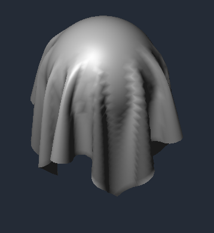
Cloth draped over the sphere, ks = 5000, t = 20 s.
The most useful connection in the experiments is that spring response depends on stiffness relative to mass: increasing ks tenfold and reducing density tenfold produce almost identical two-pin drapes. Geometry and appearance also separate cleanly: bump mapping changes lighting while displacement changes the silhouette.
Reproducibility. Unless stated otherwise, scenes use a 1 × 1 sheet, 50 × 50 masses, thickness 0.0095, density 150, ks = 5000, damping 0.2%, gravity (0, −9.8, 0), 90 frames/s, and 30 substeps/frame (dt = 1/2700 s). Density values below refer to the scene parameter, not the GUI’s divided display. Vertical initialization uses seed 184. Sphere tessellation is 40 × 40 except in Part 5.
Images are real OpenGL framebuffer captures from the same C++ simulator and shaders used interactively, rendered on an Apple M1 Pro. Simulation time is independent of wall-clock render time. Background-only margins are cropped for legibility. Parameter-comparison images share a common crop to preserve their relative scale; no geometry, shading, or results were retouched. Configurations and motion measurements are summarized in experiments.json.
CS 184 · HW4 · Cloth simulation
Part 1 — Masses and springs
The point array is built in row-major order: x advances within a row, then y advances to the next row. A horizontal sheet spans xz at y = 1. A vertical sheet spans xy with a small random z displacement in [−0.001, 0.001] to break exact symmetry. Grid indices listed in the scene’s pinned array mark fixed masses.
All masses are stored before springs are created, so the spring endpoint pointers remain valid. Structural springs connect immediate horizontal and vertical neighbors; shear springs connect diagonals; bending springs span two masses horizontally or vertically. Each pair is inserted once, and its initial separation becomes its rest length.
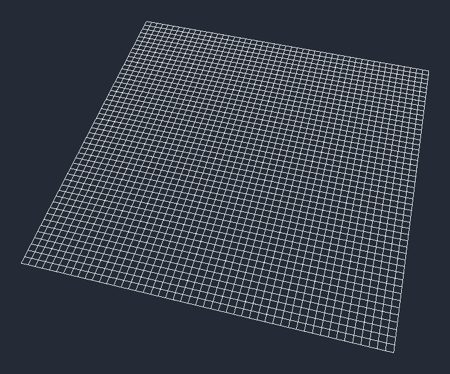
Structural + bending; shear disabled; pinned2, t = 0 s.
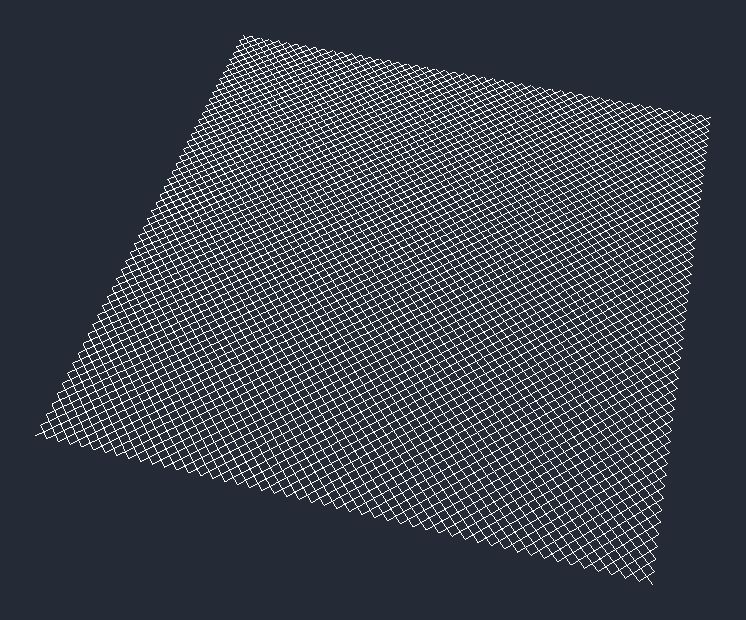
Shearing only; pinned2, t = 0 s.
All three spring families; pinned2, t = 0 s.
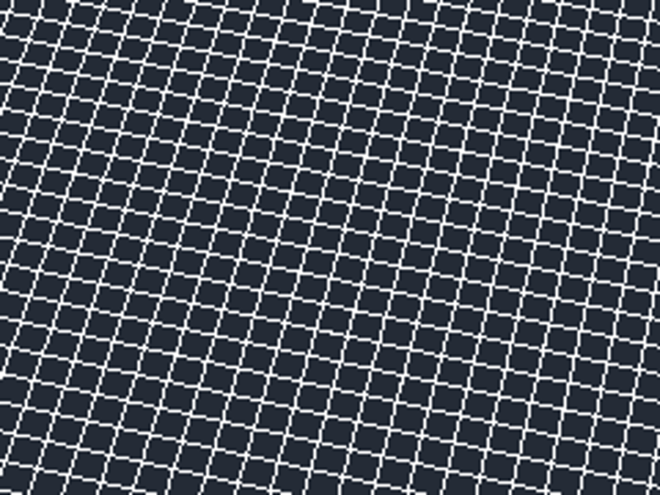
Horizontal/vertical connections; enlarged crop of the same capture.
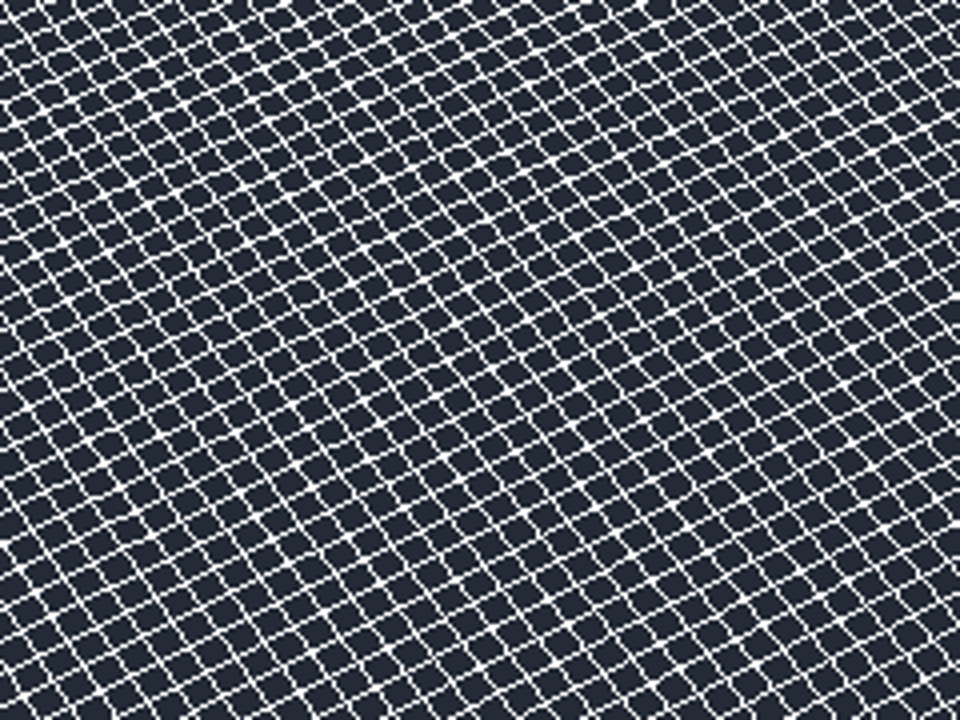
Diagonal connections; enlarged crop of the same capture.
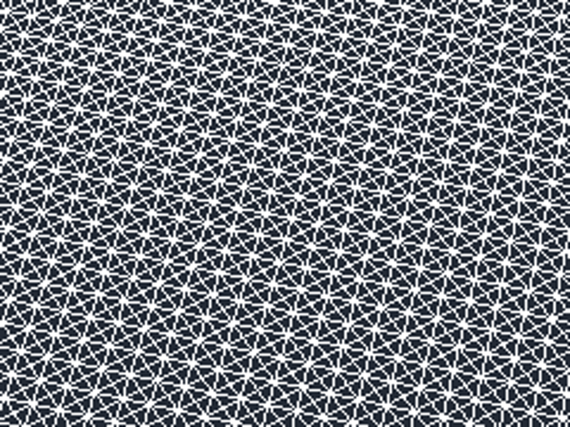
Combined network; enlarged crop of the same capture.
For the 50 × 50 grid, there are 2500 masses, 4900 structural springs, 4802 shear springs, and 4800 bending springs. The no-shear view has square cells, the shear-only view has intersecting diagonals, and the full view combines them. Bending springs overlap structural directions in this projection but connect points two intervals apart. The lower row enlarges the structure rather than changing the mesh resolution.
CS 184 · HW4 · Cloth simulation
Part 2 — Spring stiffness
At each substep, the force accumulator is reset and uniform external accelerations contribute mass × acceleration. Every enabled spring contributes equal and opposite Hooke forces. Bending uses 0.2ks, while structural and shear springs use ks. This preserves internal-force balance and keeps bending softer than stretching.
The previous position is saved before the update. Pinned masses are excluded from integration, collision corrections, and stretch projection.
ks = 500; t = 1 s.
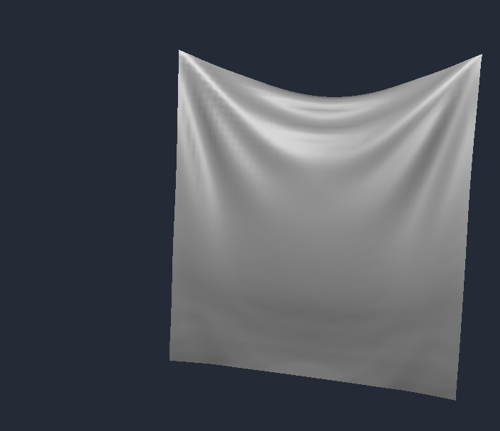
ks = 5000 (default); t = 1 s.
ks = 50000; t = 1 s.
ks = 500; t = 10 s.
ks = 5000 (default); t = 10 s.
ks = 50000; t = 10 s.
At 1 s, the low-stiffness cloth hangs farther down and is more visibly deformed; the high-stiffness cloth remains shorter and more supported between the pins. At 10 s, the low-ks cloth retains small folds and motion, while the high-ks result is smoother and less stretched. The stretch projection prevents the soft cloth from stretching without bound, so lowering ks does not make the sheet detach or grow arbitrarily long.
ks
Minimum y at 10 s
RMS frame speed at 10 s
500
-0.1429
0.01385
5000
-0.08292
1.259e-11
50000
-0.02169
1.132e-11
CS 184 · HW4 · Cloth simulation
Part 2 — Density
Here ks stays at 5000 and damping stays at 0.2%. Changing density changes each point’s mass, m = width × height × density / number_of_masses. Gravity alone still gives the same acceleration because F_gravity/m = g. Differences appear when spring forces must support the cloth’s weight: the same spring force accelerates a heavier point less.
Density = 15; t = 1 s.
Density = 150 (default); t = 1 s.
Density = 1500; t = 1 s.
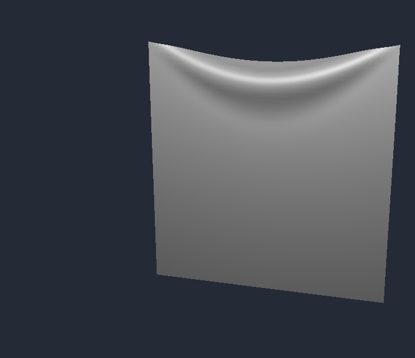
Density = 15; t = 10 s.
Density = 150 (default); t = 10 s.
Density = 1500; t = 10 s.
The light cloth is less stretched, with a higher bottom edge and a smoother hanging shape. The heavy cloth sags farther, folds more, and retains more small motion at the same late time. The screenshots at 1 s show the transient differences; the 10 s views show the resulting drapes.
Density
Minimum y at 10 s
Centroid y at 10 s
15
-0.02169
0.4784
150
-0.08292
0.4295
1500
-0.1426
0.4044
The density-15 result closely matches ks = 50000 from the previous page. Both raise ks/m by a factor of ten. The density-1500 and ks-500 cases similarly reduce ks/m; small late differences can develop from contact and numerical ordering.
CS 184 · HW4 · Cloth simulation
Part 2 — Damping
Damping scales the velocity estimate carried from the previous position. These runs change only damping, using 0%, the default 0.2%, and 1%. It is applied at every substep, so even a small percentage has a substantial cumulative effect.
Damping = 0%; t = 1 s.
Damping = 0.2%; t = 1 s.
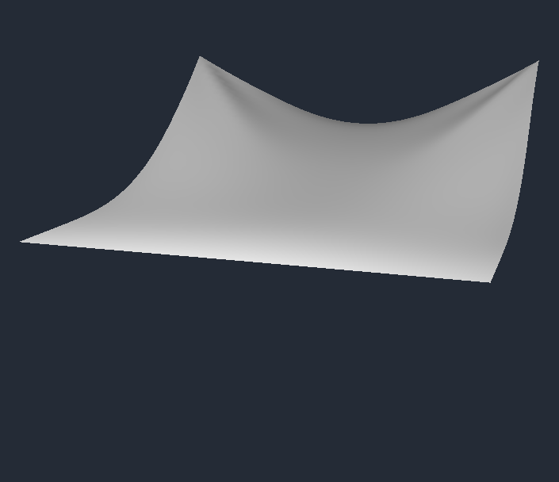
Damping = 1%; t = 1 s.
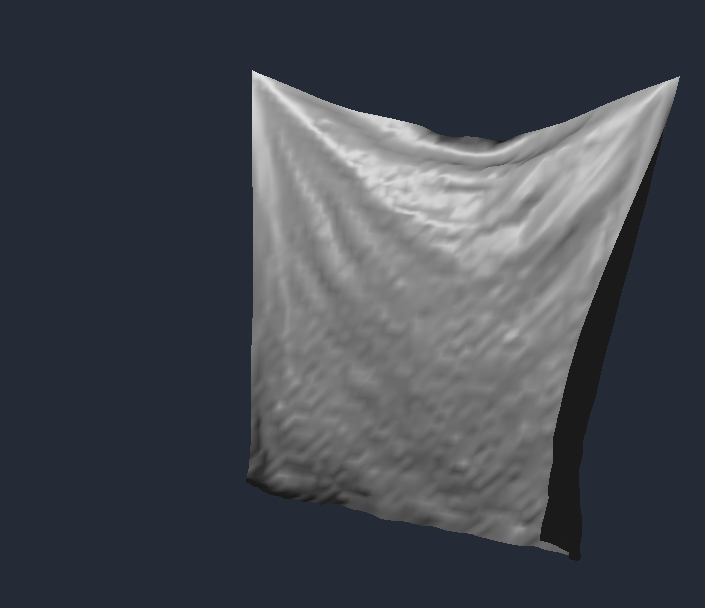
Damping = 0%; t = 10 s.
Damping = 0.2%; t = 10 s.
Damping = 1%; t = 10 s.
Without damping, the cloth swings strongly: at 1 s it has rebounded toward its initial height, and substantial motion remains at 10 s. The default loses this large-scale motion rapidly. At 1%, motion is slowed so much that the cloth is still much closer to its starting position at 1 s; it approaches the hanging configuration gradually. Higher damping reduces oscillation but can delay reaching equilibrium.
Damping
RMS speed at 1 s
RMS speed at 3 s
RMS speed at 10 s
0%
0.7327
0.6015
1.746
0.2%
0.4652
0.002159
1.259e-11
1%
0.2727
0.132
0.005472
The zero-damping run is an intentionally moving comparison, not a resting-state result. The stretch limiter and contact projections can still change energy even when explicit damping is zero.
CS 184 · HW4 · Cloth simulation
Part 2 — Four pinned corners
The four-pin scene keeps every corner fixed while the interior sags under gravity. This capture uses all default scene parameters and the completed Blinn–Phong shader. The corners stay at y = 1, while the center region forms a smooth bowl.
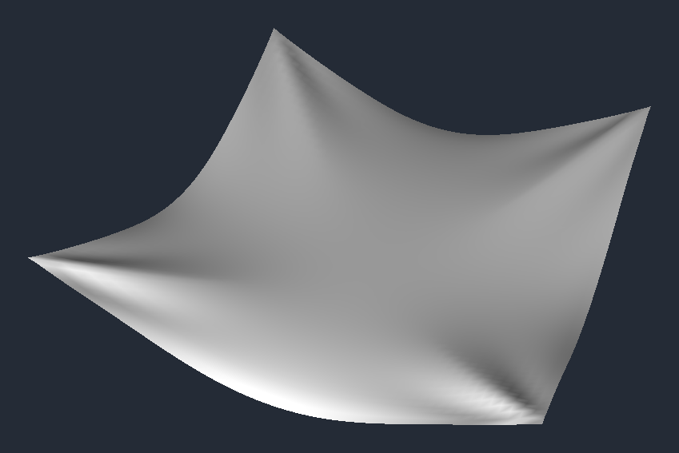
pinned4.json, default parameters, t = 20 s.
Three recorded motion samples per damping setting; dashed lines only connect samples.
Measured quantity
Result
Minimum y at 20 s
0.7356
Centroid y at 20 s
0.8174
RMS frame speed at 20 s
1.658e-12
Maximum pinned-position error
0
The 10 s and 20 s measurements agree to the displayed precision, and residual motion is at numerical precision. This supplies the required shaded resting-state screenshot, rather than relying on a transient image.
After motion and contact, each enabled spring receives a Provot-style stretch correction if it exceeds 1.1 times rest length. Unpinned endpoints split the correction; if one endpoint is pinned, the other receives it all. Both pinned endpoints stay fixed. This is a sequential projection: correcting later springs can slightly disturb earlier constraints, so it is a practical stretch limiter rather than a globally converged constraint solve.
CS 184 · HW4 · Cloth simulation
Part 3 — Sphere collisions
For an unpinned point inside the sphere, the direction from the sphere center to the point defines a radial surface target. The correction runs from the previous position to that target; friction scales the correction by (1 − f). The position is then the previous position plus the scaled correction. A point exactly at the center uses its previous radial direction, or an upward fallback, to avoid dividing by zero.
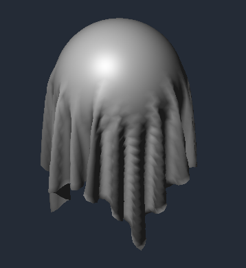
sphere.json, ks = 500, t = 20 s.
sphere.json, ks = 5000, t = 20 s.
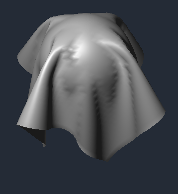
sphere.json, ks = 50000, t = 20 s.
The low-ks cloth wraps tightly around the sphere and has narrow, long hanging folds. At the default stiffness, the folds are wider and the sheet extends farther sideways. At high stiffness, the cloth resists deformation, spreads out more, and forms a broad, tent-like drape with fewer large folds. The visible top remains supported at roughly the same sphere height in all three cases.
ks
Lowest cloth y
Centroid y
RMS frame speed
500
-0.2751
0.07947
0.001754
5000
-0.2335
0.09876
0.0002189
50000
-0.2
0.1336
4.143e-05
These are late, near-rest states. The remaining RMS frame speeds are small, but are reported rather than rounded to an assertion of exact zero. The starter draws a slightly smaller sphere than its collision radius so flat rendered triangles do not visibly cut through the supporting surface.
CS 184 · HW4 · Cloth simulation
Part 3 — Plane collisions
A plane contact occurs when the signed distances of the previous and current positions lie on opposite sides of the plane. The current point is projected onto the plane, then offset by 0.0001 toward the side it came from. As with the sphere, friction scales the correction from the previous position. Handling both crossing directions keeps a two-sided plane from incorrectly pushing everything onto only its positive side.
plane.json at t = 10 s; original blue-and-gold weave texture.
The sheet lies flat above the plane with the custom texture clearly showing its intact rectangular shape. All vertices have the same height at this captured instant: 0.0004426. The contact rule retains tiny vertical jitter; its frame-based RMS speed is 0.0339 scene units/s. The image is a visually resting contact state, not a claim of mathematically zero velocity.
Collision checks run for every unpinned point against every scene primitive. Contact is position based; there are no ray-traced shadows, continuous swept intersections, or rigid-body dynamics in this model. These are the prescribed simple sphere/plane collision rules.
CS 184 · HW4 · Cloth simulation
Part 4 — Falling and folding
Self-collision groups masses into spatial boxes with widths 3 × cloth_width / num_width_points and 3 × cloth_height / num_height_points; the third dimension uses the larger of those values. Flooring signed coordinates gives the box index, including for negative positions. Integer box triples are assigned small unique float IDs, avoiding aliases from a weighted coordinate sum.
The spatial map is rebuilt each substep. For each unpinned mass, only other masses in its bucket are considered. Pairs closer than twice the thickness contribute a separation correction. Corrections are averaged over contacting neighbors, then divided by the number of simulation substeps. A mass never collides with itself; coincident masses use a deterministic separation direction.
t = 0.5 s: lower cloth first bunches and folds at contact.
t = 1 s: the upper sheet collapses onto the folded lower layers.
t = 3 s: multiple overlapping folds spread across the plane.
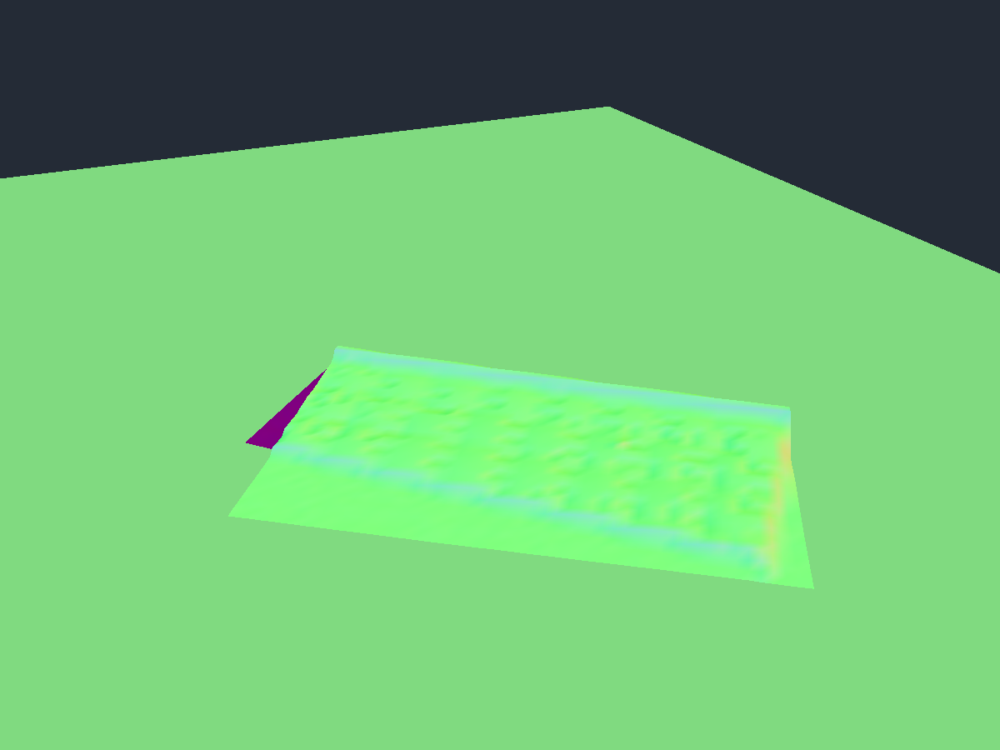
t = 10 s: flatter, more restful layers; small motion remains.
All four frames use the default selfCollision.json parameters. Normal coloring makes fold orientation visible on both sides: the ground has a constant normal color, while the cloth changes color with its bends. The sheet forms layered folds instead of simply passing through itself. RMS frame speed decreases from 1.026 at 0.5 s to 0.02941 at 10 s. Continued spreading is expected from this simplified repulsion model.
CS 184 · HW4 · Cloth simulation
Part 4 — Density and stiffness
The top row varies density at fixed ks = 5000; the bottom varies ks at fixed density = 150. Damping remains 0.2%, the vertical perturbation uses the same seed, and all views are taken at 1 s. This holds observation time and camera fixed rather than comparing unrelated stages of the fall.
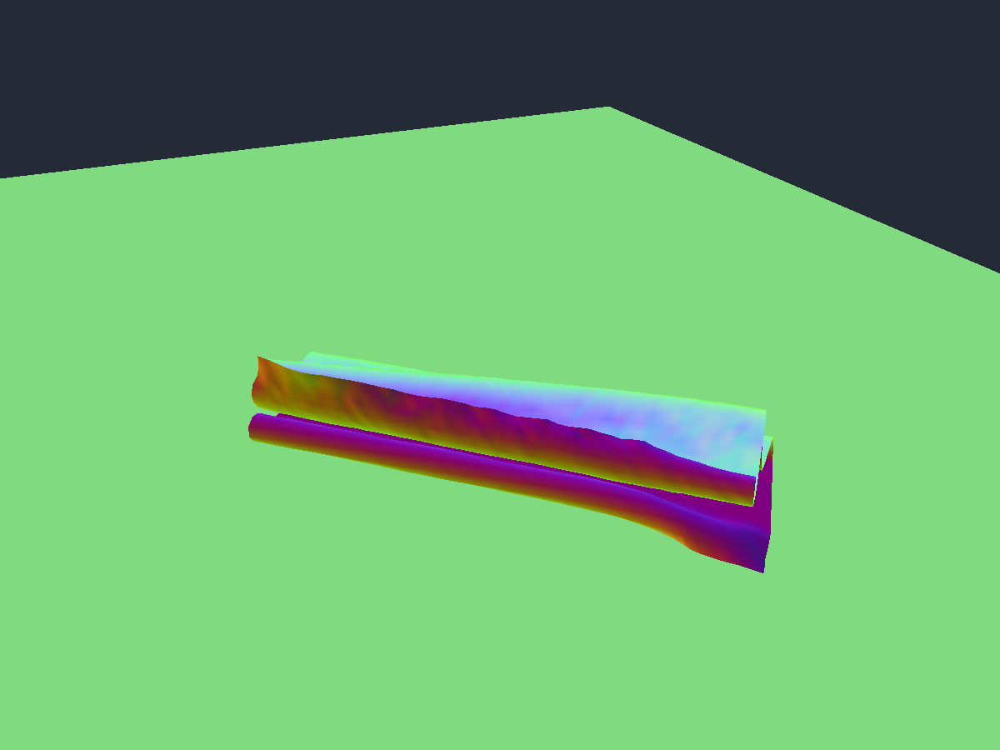
Density 15; ks 5000.
Density 150; ks 5000 (default).
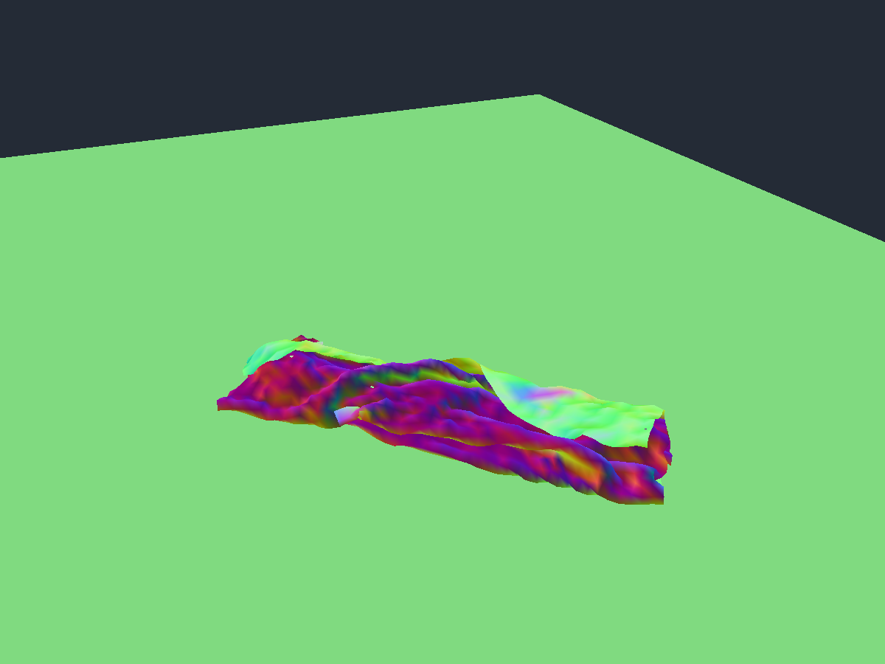
Density 1500; ks 5000.
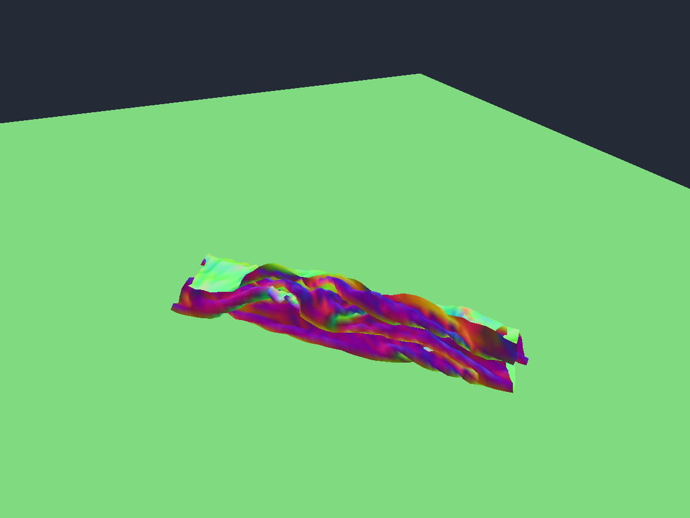
ks 500; density 150.
ks 5000; density 150 (default).
ks 50000; density 150.
At low density or high ks, the sheet resists compression more strongly relative to its weight and tends toward wider, more coherent folds. At high density or low ks, the initial collapse is softer and more crumpled. Local contact and fold topology make these comparisons less symmetric than the suspended-cloth case: small changes in which masses meet can change the later pattern.
Variation
RMS speed at 1 s
RMS speed at 10 s
Maximum y at 10 s
Density 15
0.2677
0.02667
0.06054
Default
0.3112
0.02941
0.03944
Density 1500
0.3372
0.09089
0.0556
ks 500
0.3756
0.09135
0.05662
ks 50000
0.2814
0.03594
0.05946
The softer/heavier settings keep more residual motion at 10 s in these runs. The table reports this particular experiment; it does not imply every fold height or speed must vary monotonically. Spatial buckets reduce candidate work substantially, but this same-cell, point-sample method does not guarantee continuous triangle-level nonintersection across bucket boundaries.
CS 184 · HW4 · Cloth simulation
Part 5 — Shaders and Blinn–Phong
A shader program pairs small GPU programs operating at different stages. The vertex shader transforms positions and passes normals, tangents, and UV coordinates onward. Rasterization interpolates those values across triangles. The fragment shader uses the interpolated values, lights, and textures to assign each fragment’s color. A fragment shader can change appearance without changing the underlying mesh.
Blinn–Phong adds three terms: ambient light supplies a small uniform base; diffuse light scales with the cosine between normal and light direction; specular light produces a highlight when the normal aligns with the halfway direction between the light and viewer. The point-light diffuse and specular terms decrease with squared distance. Here ka = 0.1, Ia = 1, kd = 1, ks_specular = 0.4, and shininess p = 32. This ks_specular is unrelated to spring stiffness.
Ambient only: constant base color.
Diffuse only: shape-dependent illumination.
Specular only: view-dependent highlights.
Full Blinn–Phong: sum of the three components.
All four use the identical four-pin cloth state at t = 10 s, camera, and light. Only the component weights change. The ambient view has no directional shape cues, the diffuse view reveals the bowl, and the specular view isolates highlights along normals aligned with the half-vector.
CS 184 · HW4 · Cloth simulation
Part 5 — Texture and bump mapping
The texture shader samples a 2D image at the cloth’s interpolated UV coordinates. The custom blue-and-gold weave was generated for this assignment: alternating diagonal bands establish the design, and a fine periodic modulation creates thread-like highlights. It replaces texture_1.png and is sampled directly, so its pattern follows the cloth’s deformation.
Custom weave mapped onto the four-pin cloth.
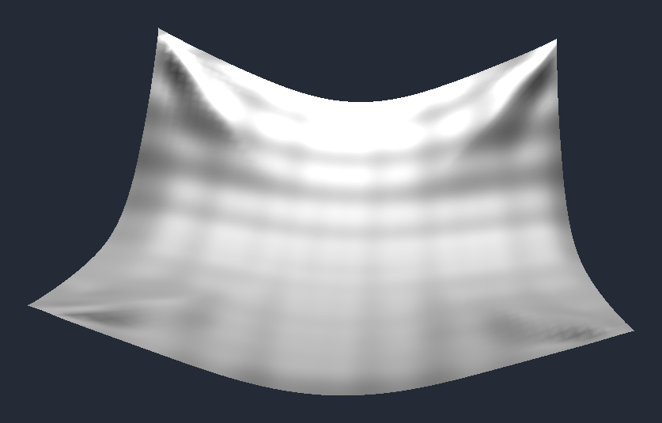
Bump mapping on the same cloth; kh = 0.02, kn = 100.
Original custom color texture.
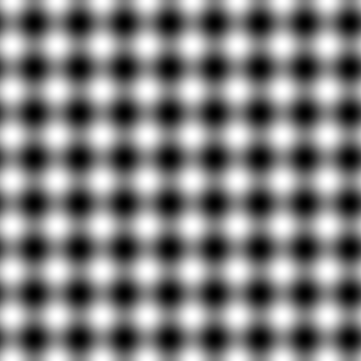
Original height_ripples.png: shared bump/displacement height field.
Bump mapping estimates height changes using a one-texel step in u and v. These differences, scaled by kh and kn, produce the local normal (−dU, −dV, 1). The tangent, bitangent, and original normal form a TBN frame that transforms this local normal into the lighting frame. The interpolated tangent is orthogonalized before use, and the resulting normal is normalized.
The cloth acquires alternating illuminated ridges while keeping its silhouette and original triangle positions. The height map is an original periodic sinusoidal surface, not the starter’s default texture_2.png. Both bump and displacement shaders sample this exact same height_ripples.png, loaded into the height-map texture slot.
CS 184 · HW4 · Cloth simulation
Part 5 — Bump vs. displacement
Displacement mapping adds normal × sampled_height × kh to each object-space vertex before model and view-projection transforms. It then uses the same bump-based normal perturbation in its fragment shader. Bump mapping leaves the mesh positions unchanged; displacement therefore changes both shading and silhouette.
These sphere-only render comparisons use the sphere from sphere.json, the same camera, the same nondefault height field, and the requested −o 16 −a 16 and −o 128 −a 128 resolutions. Hiding the cloth exposes the sphere surface rather than allowing the drape to obscure the comparison.
At 16 × 16, the bumped sphere retains its coarse, polygonal outline even though the fragment lighting suggests ridges. Displacement visibly reshapes that coarse outline, but the peaks are angular and the sampled pattern is uneven. At 128 × 128, bump shading looks smoother but still cannot alter the outline. The displaced sphere has much smoother geometric ripples and a clearly scalloped silhouette. More triangles help displacement represent the height field; extra fragments alone cannot create new silhouette geometry.
CS 184 · HW4 · Cloth simulation
Part 5 — Environment reflections
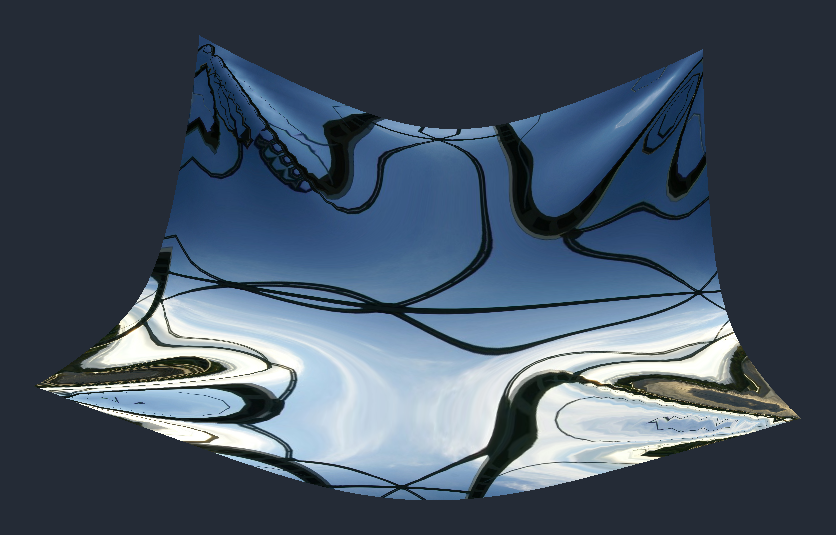
Mirror shader on the four-pin cloth, t = 10 s.
Mirror shader on the sphere, 128 × 128 tessellation.
For each fragment, the camera-to-surface direction is reflected around the normalized surface normal. That reflected direction selects incoming color from the cubemap. The bridge structure and sky therefore bend across the cloth’s changing normals, while the sphere produces a compact curved reflection of the same environment.
The cubemap supplies the background radiance; this is not a new ray-traced scene. It does not trace visibility, cast shadows, or reflect the cloth and sphere into each other. Those limitations explain why the effect can run in a simple rasterization shader.
What was implemented. All required shader types are present: diffuse, full Blinn–Phong with isolated diagnostic components, custom texture mapping, bump mapping, displacement mapping, and environment-mapped reflection. The provided Custom shader remains unused; no optional extra credit is claimed.
Verification. Shader checks ran on the GPU, rather than checking only source text: 13 analytic checks cover diffuse clamping, isolated and summed Blinn–Phong components, flat and varying height maps, texture/cubemap sampling, and transform-feedback measurement of actual vertex displacement. All passed with OpenGL error state zero. Every report image was rendered with the production shader files.
CS 184 · HW4 · Cloth simulation
Verification, lessons, and acknowledgment
The numerical suite passes 234 checks covering grid order, mass/spring counts, pointer stability, pinning, vertical perturbation bounds, triangle count, analytic Verlet steps, force reset, damping percentages, substep size, Hooke-force symmetry, spring toggles, bending strength, isolated stretch projection, plane crossing from either side, friction endpoints, sphere-center handling, signed spatial bins, self-pair exclusion, and finite separation of coincident masses. The shader suite passes 13 GPU checks. These are local checks, not an official course autograder result.
The initial regression runs failed on missing starter behavior before implementation. A later boundary regression caught a plane point incorrectly colliding while departing from the surface; the crossing condition was corrected and the affected contact experiments were rerun. A practical challenge was creating reproducible evidence without desktop automation: a hidden OpenGL context captures the same renderer after exact numbers of physics substeps. The capture path also rejects nonfinite positions and records pinned errors and frame-based motion. Per-image configurations and measurements were kept alongside the unedited captures.
The experiments make three distinctions useful: mass cancels out of free-fall acceleration but changes spring response; stronger damping can suppress oscillations while slowing the approach to equilibrium; and shading detail is not geometric detail. The numerical constraints and spatial collision approximation also show why a plausible, stable cloth model can still differ from a fully physical material.
Limits. Self-collision uses sampled masses in the same bucket, not continuous face/edge collision. Sequential stretch projection does not globally solve all constraints at once. The plane can show tiny contact jitter, and the self-collision pile can keep spreading. These limitations are visible or measured and are not hidden by claims of perfect convergence. The report selects stable or near-rest views where required and labels transient comparisons explicitly.
Sources. Implementation requirements, experiment settings requested by staff, and the rubric were read from the current Fall 2026 handout. No other student solutions or public solution repositories were used.
Acknowledgment of AI assistance. This work used substantial OpenAI Codex assistance for conceptual explanations; generation of the C++ simulation/collision implementation and GLSL shaders; regression tests and the capture workflow; execution and analysis of experiments; creation of the custom procedural textures; and drafting and formatting this report. The screenshots and measurements come from actual simulator and GPU runs. The AI-assisted prose is not represented as independently written student prose. Final review and Gradescope uploads remain with Rakesh.